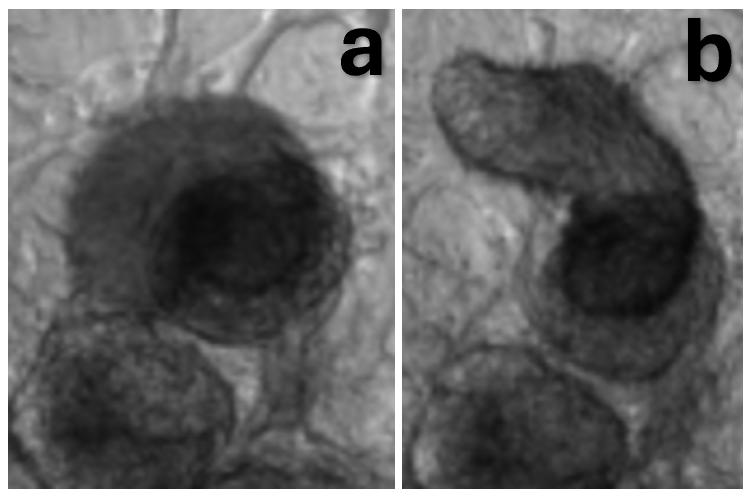

This project was performed at UAB in the Tissue and Organ Chip Bioengineering laboratory run by Dr. Palaniappan Sethu and was directly mentored by Dr. Ian Berg.
Patients that contract severe community acquired pneumonia (CAP) have a higher risk of a major adverse cardiac event (MACE). Streptococcus pneumoniae (Spn) is commonly associated with this disease, but the mechanisms driving cardiac injury are largely unknown. Existing in vivo and 2D in vitro models are limited in clinical translation and fail to replicate native human tissue interactions. We aim to develop and assess a physiologically relevant 3D in vitro model using human induced pluripotent stem cells to differentiate cardiomyocytes for the investigation of the consequences of Spn infection, focusing on structural and functional changes as well as cytokine signaling responses. Brightfield and immunofluorescence imaging, video analysis, and cytokine assays were used to make observations, which revealed disintegration of 2D monolayers while 3D tissues reorganized and formed microlesions while maintaining contractile function. The cytokine assays showed significant elevation of inflammatory, immune cell attracting, and apoptosis-related cytokines in infected 3D tissues; this suggests a highly active acute inflammatory response consistent with pre-MACE markers. The 3D model may provide a physiologically relevant platform for analysis of cardiac infections and resulting injury, which could serve as the foundation for future studies to further refine the model and investigate cell-pathogen interactions, pathogen mechanisms, and drug testing.
Our studies incorporate 2D and 3D in vitro models of cardiomyocytes (CMs) differentiated from human-induced pluripotent stem cells (hIPSCs). We have previously used 3D models to study the effects of pressure and stretch on the CMs, while our co-collaborators have assessed microlesion formation in in vivo mouse models. This study presents new results that both validate the use of the 3D models in infection studies and further characterizes Spn infection in 3D tissues using fluorescence microscopy, video analysis, and cytokine expression.
For more detailed background information, see the bottom of the page.
To evaluate the impact of Spn on structural integrity of tissues, we used fluorescence microscopy to investigate microlesion formation in 2D and 3D tissues. Microlesions indicate severe damage and appear in these images as regions of high bacteria concentration within cell tissue. As microlesions form in physiological tissues, the presence of these regions would indicate better replication of in vivo conditions. To facilitate fluorescence imaging, bacteria were labeled with the fluorescent marker mNeonGreen during culture, while the tissues were fixed and stained with DAPI post-experiment; thus, microlesions appear as regions with high mNeonGreen concentration. By analyzing both 2D and 3D tissues, we evaluated the impact of 3D architecture on the behavior and organization of Spn, as well as the effects of infection in varying microenvironments.
Infected and uninfected fluorescent images of 3D samples stained for bacteria (mNeonGreen) and nuclear material (DAPI). The figure shows the three channels—brightfield, mNeonGreen, and DAPI—merged as well as each channel separately for both an infected and uninfected sample 24 hours after the infection time point. The scale bar in each figure represents 1000 μm. The infected sample shows a region of interest with increased mNeonGreen concentration, which is not present in the uninfected control.
There are two distinct regions of high mNeonGreen concentration within the infected 3D tissue (Fig. 1). This is not observed in either of the uninfected samples nor the 2D infected tissue (Fig. 2). These regions in the 3D infected tissue also show slight decrease in DAPI staining, which is similarly observed in the 2D infected sample (Fig. 1, 2).
Infected and uninfected fluorescent images of 2D samples stained for bacteria (mNeonGreen) and nuclear material (DAPI). The figure shows the three channels—brightfield, mNeonGreen, and DAPI—merged as well as each channel separately for both an infected and uninfected sample 24 hours after the infection time point. The scale bar in each figure represents 1000 μm. The infected sample shows a region of interest with decreased DAPI concentration, which is not present in the uninfected control. However, the resolution of the merged and brightfield channels are too low to assess this ROI.
To investigate the effects of infection on electrophysiologic function of tissues, videos were taken and analyzed before and after infection and compared between both 2D and 3D as well as infected and uninfected sample groups (Fig. 3). With this, we aimed to investigate which model would be preferred for analysis of contractility and cardiac function. The videos were taken in brightfield 20x at 15 fps and are 15 seconds long. To be consistent with physiological tissue, CMs should beat 60-100 times per minute. The amplitude is measured in arbitrary units (a. u.) and thus is not directly related to in vivo conditions; however, higher amplitude denotes a stronger contraction and greater movement while lower amplitude corresponds to less movement or impaired contraction. Therefore, though arbitrary, the higher the amplitude, the better the measurement of contraction.
Comparison of quantified bpm and amplitude of contraction across dimension and infection status. a) Bpm shown for each condition at 0 hours post infection. No statistical significance. b) Amplitude for each condition at 0 hours post infection measured in arbitrary units (a.u.). The value for 3D tissues, both infected and uninfected, were statistically significantly lower than that of the 2D samples of the same infection status, with p-values < 0.0001 for both. c) Bpm for each condition at 24 hours post infection. No statistical significance. d) Amplitude in a.u. for each condition at 24 hours post infection. The uninfected samples showed the same statistically significant difference in amplitude between the 2D and 3D samples, but the infected samples’ significance decreased to a p-value of 0.01239. All of the data was analyzed via two-way ANOVA with Bonferroni correction.
In all infected samples, both beats per minute (bpm) and amplitude are higher in the 2D samples than the 3D counterparts (Fig. 3), with 2D at 0 hours being fairly similar to physiological conditions for bpm (Fig. 3a). Bpm and amplitude are also higher in all uninfected 2D samples at all time points except for bpm at 24 hours, where 3D is actually higher than 2D by a small margin (Fig. 3c). The only statistical significance is for amplitude between 2D and 3D samples at both 0 and 24 hours (Fig. 3b, d); however, significance diminishes but still exists in infected samples after 24 hours (Fig. 3d).
Comparison of quantified bpm and amplitude of contraction across time point and infection status. a) Bpm shown for each time point and condition for 2D monolayer samples. No statistical significance. b) Amplitude for each time point and condition for 2D monolayer samples in arbitrary units (a.u.). The difference between 0 and 24 hours is significant for both infected and uninfected samples at the same magnitude with p-values of 0.001747 and 0.006228 for infected and uninfected, respectively. c) Bpm for each time point and condition for 3D tissue samples. No statistical significance. d) Amplitude in a.u. for each time point and condition for 3D monolayer samples. No statistical significance. All of the data was analyzed via two-way ANOVA with Bonferroni correction.
The same data is analyzed in Fig. 4; however, statistical significance is analyzed differently. This more clearly shows the trend of degradation of bpm and amplitude in both 2D and 3D samples and infected and uninfected samples. However, the only statistically significant figures are the difference in amplitude in both infected and uninfected 2D samples between 0 and 24 hours.
Peaks are delineated by vertical red lines through the full graph and orange circles at the exact peaks. a) Uninfected monolayer at 0 hours post-infection. b) Uninfected monolayer at 24 hours post-infection. c) Infected monolayer at 0 hours post-infection. d) Infected monolayer at 24 hours post-infection.
The contraction waveforms that allowed for the quantification of beat rate and amplitude were initially visualized by the MUSCLEMOTION function in MATLAB. These visualize the lower amplitudes for 2D monolayers (Fig. 5) compared to 3D tissues (Fig. 6). Additionally, the degradation over time is also noticeable.The contraction waveforms that allowed for the quantification of beat rate and amplitude were initially visualized by the MUSCLEMOTION function in MATLAB. These visualize the lower amplitudes for 2D monolayers (Fig. 5) compared to 3D tissues (Fig. 6). Additionally, the degradation over time is also noticeable.
Peaks are delineated by vertical red lines through the full graph and orange circles at the exact peaks. a) Uninfected 3D tissue at 0 hours post-infection. b) Uninfected 3D tissue at 24 hours post-infection. c) Infected 3D tissue at 0 hours post-infection. d) Infected 3D tissue at 24 hours post-infection.
Figure 7. After infection, changes in shape were observed in 3D cardiac spheroids.
a) Brightfield 40x image of a cardiac spheroid prior to infection. b) Brightfield 40x image of the same cardiac spheroid 24 hours after infection.
To analyze cardiac remodeling resulting from infection, brightfield microscopy images were taken before and 24 hours after infection (Fig. 7). For this experiment, only 3D tissues were analyzed as cells in 2D tissues died and washed away rather than reorganizing. In 3D tissues, infection caused cell death and reorganization and reattachment in a new region. Changing the originally round spheroid into a longer, cylindrical shape. Despite changes in organization, the spheroid continued to beat in its new shape post infection.
To further characterize the effects of Spn infection on CMs, media samples were collected from the 3D samples and analyzed for cytokine expression. Three samples were used for each condition and the observed concentration was averaged to calculate the log2 fold change of the infected samples against the uninfected samples, which is displayed as a heatmap (Fig. 8). A negative value, shown in blue, indicates a decrease in expression, while a positive value, shown in red, indicates an increase. The strength of the color indicates the severity of the change and white corresponds to no change.
Few remained unchanged.
The cytokines that were up and downregulated were assessed and clustered based on roles and function. Pro-inflammatory cytokines, leukocyte attracting chemokines, type II interferons, Th2/allergic response modulators, tissue repair/angiogenesis, B-cell activation/humoral response, and cytotoxicity and apoptosis cytokines were all upregulated (Sup. Table 1). Hematopoietic/progenitor cell factors, anti-inflammatory/regulatory cytokines, T-cell homeostasis and proliferation, neutrophil/granulocyte chemotaxis, monocyte/eosinophil recruitment, pro-fibrotic and repair-related cytokines, apoptosis and cytotoxicity modulators, thymic/lymphoid trafficking, and alarmins and DAMPs were downregulated (Sup. Table 2). Additional heatmaps organized by function were also sectioned (Sup. Fig. 1a). Cytokines involved in adverse cardiac remodeling such as IFNγ, TNFα, and IL-1β were not significant, but showed a distinct trend of upregulation. Meanwhile others involved in the same process as well as anti-inflammatory pathways, such as IL-6 and IL-10, were downregulated.
Cytokine expression was also evaluated for statistical significance and quantified through their observed concentrations (Fig. 9). These cytokines were clustered by function and type—immune cell recruitment and trafficking (Fig. 9a), immune modulation and differentiation (Fig. 9b), inflammation and apoptosis (Fig. 9c), and inflammation and neutrophil-attracting chemokines (Fig. 9d)—in part due to variations in expression levels that made the data unreadable when displayed in totality.
Most were significant upregulations, while Eotaxin and MPIF-1 were significantly downregulated. a) Cytokines involved in immune cell recruitment and trafficking were significantly upregulated with the exception of Eotaxin and MPIF-1, which were downregulated. The p-values for Eotaxin, IP-10, Lymphotactin, and MPIF-1 were 0.0024, 0.0452, 0.0431, and 0.0267, respectively. b) Cytokines involved in immune modulation and differentiation were significantly upregulated. The p-values for IL-13, IL-22, IL-23, and IL-31 are 0.0201, 0.0223, 0.0463, and 0.01, respectively. c) Cytokines involved in inflammation and apoptosis were significantly upregulated. The p-value for TNFβ is 0.0463. d) Cytokines involved in inflammation and neutrophil attraction were significantly upregulated. The p-values for ENA-78 and GCP-2 are 0.0129 and 0.0039, respectively.
Of the cytokines that changed expression to a statistically significant level, all but Eotaxin and MPIF-1 were upregulated in infected samples 24 hours after infection (Fig. 9). These expression changes are the result of acute infection, with exposure to bacteria for two hours, antibiotics for one, and samples collected 24 hours later. Expression changes were especially significant for Eotaxin, IL-31, and GCP-2, which had p-values less than or equal to 0.01. These cytokines were functionally categorized into those responsible for immune cell recruitment and trafficking, immune modulation and differentiation, inflammation and apoptosis, and neutrophil attraction. The elevation of the expression of the cytokines corresponds to an increase in the occurrence of these functions. This clustering clarified trends that may have been obscured otherwise.
Severe CAP that requires hospitalization significantly increases a patient’s risk of MACE for up to ten years. Spn is the most common bacteria isolated from CAP patients and is known to cause bacteremia and IPD that can lead to MACE. The TIGR4 strain, which was used in this study, is highly linked to severe CAP and secondary consequences and is known to invade the myocardium, inciting CM death and the formation of microlesions (Brown et al., 2014). However, the mechanisms behind this are still largely unknown, including CM response to infection. Additionally, there is a lack of studies that are clinically relevant due to the high prevalence of mice and NHP models, which have known limitations. When human cells are studied, 2D cultures are typically utilized, which fail to mimic the 3D microenvironment and architecture essential to mechanistic and structural analysis. These models have also been known to behave abnormally. A solution to this is the use of hIPSC-derived CMs which can be aggregated into 3D tissues, providing a renewable and ethical in vitro model that enhances physiological relevance by replicating structural complexity and interactions seen in native tissue. While in vivo models provide a better model of pathophysiology, this model allows for variable control and isolation as well as the clinical relevance associated with the use of human cell lines. However, this model is not fully refined and standardized. This research provides foundational research for both characterizing Spn infection and further validating 3D tissue models, especially in the context of cardiac infection studies. Microlesion formation, electrophysiology, structure, and cytokine expression were investigated 24 hours after infection with the goal to establish a physiologically relevant in vitro platform for future studies.
The physiological relevance and potential for clinical translation of 3D tissue models is highlighted by the observed formation of microlesions absent in 2D monolayers. In the infected sample, there were two distinct regions of high mNeonGreen concentration (Fig. 1), with no similar findings in the uninfected or infected 2D monolayer samples (Fig. 2). Since the bacteria were stained with mNeonGreen during culture and the staining was not otherwise used, this suggests the accumulation of bacteria. Furthermore, DAPI was used to stain for DNA and the regions with high mNeonGreen also showed a slight decrease in DAPI concentration (Fig. 1). A decrease in DAPI concentration could correspond to cell loss, nuclear degradation, or displacement, any of which indicate tissue damage. This suggests cell death and bacteria accumulation, supporting the interpretation that a lesion formed. While no change in mNeonGreen concentration was noticed in the 2D monolayers, there was a region that showed decreased DAPI concentration, indicating similar cell death and/or damage (Fig. 2).
These observations are consistent with the hypothesis that Spn infection causes microlesions in 3D tissues but not 2D monolayers due to the difference in complexity and specifically, the inability of simplified monolayers to recapitulate physiological microenvironments. Furthermore, this emphasizes the limitations of 2D culture in modeling complex pathology while 3D tissues demonstrate enhanced cell-cell and cell-pathogen interactions and demonstrating damage localization. This lends towards the idea that 3D tissues are better models of complex physiology as the observations are also consistent with in vivo Spn infection studies, which demonstrated damage localization in the form of distinct microlesion formation. While the observations lend a strong case towards acceptance of the hypothesis, quantification of mNeonGreen and DAPI concentrations in the region of interest (ROI) would provide increased confidence. Regardless, microlesion formation in 3D tissues not present in 2D monolayers indicates enhanced physiological relevance of 3D in vitro models when it comes to structural analysis of infection.
While 3D models enhance biomimetic structure, 2D monolayers may be optimal for electrophysiologic assessments due to the limited contraction and beat regularity in 3D tissues. To further assess the effects of Spn infection on function of cardiac tissue models, beats per minute (bpm) and contraction amplitude were analyzed from 15 fps, 15 second brightfield videos of both 2D and 3D models, before and after infection. With this we aimed to determine which model was optimal for electrophysiological assessments and simultaneously characterize the effects of Spn infection. Typically, CMs beat between 60-100 times per minute, providing a physiological parameter for the models to achieve. This figure gives insight into the relevance and functional integrity of the models.
Generally, bpm and amplitude were higher in 2D monolayers compared to their 3D counterparts regardless of infection status (Fig. 3). The only exception to this being the bpm in the uninfected sample at 24 hours (Fig. 3c). Additionally, the 2D samples—both infected and uninfected—at 0 hours exhibited bpm values closer to the physiologically relevant parameter (Fig. 3a). The amplitudes of these 2D samples also showed higher contractile amplitudes, with this pattern persisting 24 hours after infection (Fig. 3b, d). There was no statistically significant difference in bpm at any time point, but amplitude was significantly reduced for 3D tissues at both 0 hours for both infection statuses (p < 0.0001) and at 24 hours for infected (p = 0.01239) and uninfected samples (p < 0.0001), though the magnitude of significance decreased for the infected sample (Fig. 3b, d). This suggests that both bpm and amplitude, and consequently electrophysiologic function, degrade in both models with time and infection.
The data is restructured for alternative analysis in Fig. 4, which helped to further clarify the temporal trend, revealing deterioration of bpm and amplitude over time regardless of infection status. There was a significant decrease in amplitude seen in the 2D monolayers from 0 to 24 hours in both infected (p = 0.001747) and uninfected (p = 0.006228) samples (Fig. 4b). While no other statistically significant changes were observed in either 3D or 2D samples, there was a consistent trend of both bpm and amplitude degrading over time with a single exception. Bpm was consistent, or enhanced, in the uninfected 3D model after 24 hours (Fig. 4c). This alternative analysis demonstrates the temporal degradation of contractile function in both models.
The reduction in contraction amplitude and beat rate in 3D tissues could be the result of cell aging, insufficient algorithm sensitivity, or represent a true limitation of the model. Additionally, the technique of adhering the spheroids to a MatriGel slide was experimental in this study, and may not be the optimal condition for spheroids, which our lab typically analyzes in suspension or chip models. Further studies are needed to ensure the validity of these experimental observations due to the lack of statistical power. However, this data suggests that 2D models display enhanced contraction dynamics, broaching closer to physiological parameters. This suggests that 2D monolayers are better models for detection of changes in electrophysiologic function, such as those caused by degradation due to time or infection. Future studies should also optimize the 3D tissue model, creating a 3D tissue chip rather than spheroids fixed to slides. Force quantification and calcium imaging may also provide complementary insights to ensure the MUSCLEMOTION algorithm is accurately capturing the bpm and amplitude data and consequently the electrophysiologic function.
The enhanced biomimetic structure of 3D models provides the necessary conditions and microenvironment to study infection-induced damage, including tissue remodeling. These structural changes were not observable in 2D tissues as dead and damaged cells were washed away in media changes, and thus, 2D images were excluded from this analysis. Brightfield images of 3D tissues at both 0- and 24-hours post-infection were used to make these observations (Fig. 7).
Multiple samples showed observable configuration changes, but the example analyzed specifically changed from a typical, round spheroid, to an elongated cylindrical shape, suggesting that 3D tissues are able to mitigate infection effects through reorganization rather than decaying. Though magnitude was altered, these tissues were able to maintain electrophysiologic function after reorganization. The observed morphological change suggests that 3D tissues are capable of dynamic infection responses which includes reorganization and reattachment in response to cell damage and death.
These observations also suggest that at least partial integrity of conduction networks is maintained or reestablished during remodeling. While 2D models appear better at achieving physiological parameters, this dynamic response seen only in 3D tissues provides opportunities for research involving tissue remodeling, recovery, and maladaptation, which cannot be recapitulated in 2D models. Building upon this research, future studies could utilize structural staining or continuous imaging to track the remodeling process and potential mechanisms behind it.
These observations are further supported by cytokine secretion analysis. Though not significant, there was a distinct trend of upregulation of cytokines involved in adverse cardiac remodeling, such as IFNγ, TNFα, and IL-1β. While IL-6 and IL-10 might be expected to also be upregulated due to their roles in remodeling, they are also involved in other mechanisms, such as anti-inflammatory pathways. Since this study represents a very acute response, it would be too early to notice an upregulation in these, as inflammation is essential to the acute damage response and inhibiting this would cause more harm. The upregulated cytokines involved in cardiac remodeling stimulate fibroblast proliferation, collagen production, and can cause fibrosis and amplify cardiac cell death without inhibiting inflammation.
Complex cytokine signaling is observed in 3D tissues in response to acute Spn infection. From media samples collected from 3D samples 24 hours after infection, cytokine secretion profiles were analyzed by a Human Cytokine 96-Plex Discovery Assay produced and performed by Eve Technologies Corporation. Concentrations were compared between infected and uninfected samples, from which, we observed transcriptional changes indicative of a multifaceted immune response. The heatmap resulting from the log2 fold change of these concentrations revealed cytokines that were upregulated (red), downregulated (blue), or constant (white), with gradient levels to show the degree of change (Fig. 8). Few cytokine levels were consistent with uninfected levels, with a majority of those assessed being upregulated.
Functional clustering allowed for the assessment of upregulated cytokines that suggests a robust activation of both innate and adaptive immunity pathways, heightened antiviral response, increased immune cell activation and recruitment, activation of B-cell immunity and antibody production, and tissue repair signaling for damage control (Sup. Table 1). In sum, the CMs identified stress and retaliated with a broad, systemic response using any tool at their disposal. In contrast, cytokines responsible for anti-inflammatory regulation, repair, immune response suppression, t-cell homeostasis, eosinophil recruitment, apoptosis and cytotoxicity modulators, thymic and lymphoid trafficking, and alarmins and DAMPs were downregulated (Sup. Table 2). This suggests prioritization of acute inflammatory response gene expression, a shift away from allergy response pathways, and an effort to limit host tissue damage, but this data could also be indicative of exhaustion or lack of resources. The co-occurrence of up and downregulation is consistent with the known complexity of the innate immune response to infection, altering the microenvironment to be pro-inflammatory and damage-responsive while allocating energy and resources away from tissue maintenance and regeneration pathways.
While most cytokines were altered to some degree, statistical analysis was performed to assess those that were significantly transformed. This data was clustered into roles and functional groups and displayed in bar graphs according to those categories. Of the statistically significant cytokines responsible for immune cell recruitment and trafficking IP-10 and lymphotactin were upregulated while Eotaxin and MPIF-1 were downregulated (Fig. 9a). More specifically, IP-10 activates and attracts leukocytes, natural killer cells, monocytes, dendritic cells, and macrophages that is produced in response to IFNγ—a type II interferon linked to pro-inflammatory effects and ability to enhance immune cell activity (Bhat et al., 2017; Chen et al., 2020). Lymphotactin performs a similar role, activating and trafficking essential immune cells, especially CD8+ cytotoxic T cells, which aid in clearance of infected cells and debris (Matsuo et al., 2018). The downregulation of Eotaxin and MPIF-1 suggests suppression of eosinophil-and monocyte-mediated. Those associated with immune modulation and differentiation, such as IL-13, IL-22, IL-23, and IL-31, were significantly upregulated (Fig. 9b). All of these cytokines are interferons which have been linked to helper T-cell polarization and barrier tissue responses (Pavlidis et al., 2022). IL-31 has been linked to chronic inflammation and tissue remodeling, an issue of potential interest in future studies and a response that is consistent with the structural changes observed in 3D tissues (Serra-Baldrich et al., 2022). TNFβ, a cytokine associated with inflammation and apoptosis, was also significantly upregulated (Fig. 9c). Inflammation and neutrophil-attracting chemokines like ENA-78 and GCP-2 were also significantly increased (Fig. 9d). This suggests a shift towards neutrophil-mediated, acute inflammatory response.
These findings represent the complexity of the response achievable by 3D cardiac tissue models. Particularly, the elevation of immune activation and inflammatory pathways with dulling of regulatory and homeostatic pathways indicates a highly active acute response state. This allows for defense against infection that simultaneously contributes to the remodeling and tissue damage observed in the samples. While more samples would improve the statistical power, these observations provide a foundation for the validation of the 3D model for studying inflammation and infection. Future studies could expand on this by replicating to ensure accuracy, performing with 3D tissue chip models, assessing the difference between expression in this model and monolayers, and increasing the temporal analysis or infection timeframe. This would both further characterize the effects of infection and also identify expression changes that may be exclusive to either 2D or 3D models.
Patients hospitalized with severe community acquired pneumonia (CAP) have a significantly higher risk of developing a major adverse cardiac event (MACE) with a 10-fold increase in risk for 30 days and a twofold increase for up to 10 years (Corrales-Medina et al., 2012, 2015; Holter et al., 2016; Reyes et al., 2023; Thomsen et al., 2006). The link between pneumonia and acute cardiac events has been recognized since the 1930s, but the mechanisms behind this remain largely unknown (Shenoy et al., 2017). In conjunction with other lower respiratory disorders, CAP costs the United States healthcare system upwards of $10 billion annually and just CAP and influenza account for the fourth leading cause of death worldwide (Brueggemann et al., 2021; Reyes et al., 2017; Troeger et al., 2018); this represents a significant burden on both public health and resources. Of the bacteria isolated from hospitalized CAP patients, Streptococcus pneumoniae (Spn) is the most common species (Lozada et al., 2024). In humans, Spn first colonizes in the nasopharynx and spreads from there, invading areas that are generally resistant to intrusion (Africano et al., 2021). Spn has been proven to invade organs leading to severe long-term damage. Several studies have attributed this and increased MACE risk to the development of bacteremia and invasive pneumococcal disease (IPD) (Christaki & Giamarellos-Bourboulis, 2014; Eurich et al., 2017). TIGR4, a strain commonly used in Spn studies, results in high-grade bacteremia. A recent study discovered that Spn invades myocardium and kills cardiomyocytes (CMs) by crossing the vascular endothelium from the bloodstream (Gilley et al., 2016; Shenoy et al., 2017). Contractility is also inhibited by pore-forming toxins released as Spn replicates within CMs and activation of the NF-κB pathway, which plays a role in inflammatory response (Shenoy et al., 2017). Another study proved that TIGR4 forms microlesions that provide resistance to antimicrobials (Brown et al., 2014; Brown & Orihuela, 2015; Shenoy et al., 2017). However, the studies proving that Spn is capable of invading cardiac tissue and causing severe, lasting damage were conducted in mice and non-human primate (NHP) models without replication with human cells, limiting physiologic relevance (Reyes et al., 2017). Studies that have focused on human cells have researched Spn’s effect on the nervous and respiratory systems using two-dimensional (2D) monolayer cultures, which cannot replicate the structural and functional complexity of physiological tissues and their microenvironments.
The development of protocol to differentiate CMs from human-induced pluripotent stem cells (hIPSCs) has been revolutionary for cardiovascular research, creating a renewable source of cells requiring minimal invasion to collect them (Hsueh et al., 2023; Karakikes et al., 2015). This model allows for the replication of the complex physiology of CMs in vitro, which is especially important in the study of cell-pathogen interactions as variables can be isolated and controlled to investigate mechanisms, effects, and interventions with limited ethical concern compared to other models (Barron et al., 2021; Karakikes et al., 2015). This level of control and customization is almost impossible to achieve with in vivo models, especially animal models which come with complications such as ethical concerns, increased financial burden, and greater maturation time (Barron et al., 2021). There is also an issue with inconsistency in both in vitro and in vivo models recently used for pathophysiological studies; however, in vivo models are essential to linking in vitro experiments to further clinical trials as it is currently the best model available for safety testing (Shi et al., 2019). Most in vitro studies fail to mimic the complex microenvironment and cell-pathogen interactions at an organ level, meaning many studies utilize animal models that are highly susceptible to failure and low efficacy and exhaust time and resources (Shi et al., 2019). Traditionally, in vitro studies have utilized 2D monolayer cultures of cells are either isolated directly from hearts or using established cell lines (Dou et al., 2022). While advantageous due to their simplicity, cost efficiency, and well-established protocol, monolayers are limited in translation due to their simplicity and consequential inability to mimic the complexity of physiological tissues; cells in 2D monolayers tend to behave abnormally and are unable to mimic the extracellular environment (Kapałczyńska et al., 2018). Among animal models, mice models are one of the most common despite a recent study proving that the murine immune system is not directly transferable to human conditions (Zschaler J. et al., 2014). Additionally, growing ethical concerns surrounding the use of animal models could hinder research in the future as a ban on testing cosmetic products and ingredients has already surfaced in the European Union (Shi et al., 2019). As research stands today, there are no appropriate in vivo or 2D in vitro models for direct translation to humans, leaving a gap for the development of more physiologically relevant models with fewer complications (Shi et al., 2019).
While no in vitro model will be able to replicate the comprehensive evaluations of infection and therapeutic effects on whole organisms and organ systems like in vivo models, there remains a need for more physiologically relevant models with fewer complications. Three-dimensional (3D) in vitro models offer a solution to bridge the gap between traditional 2D and animal models. These models enhance complexity, better replicating in vivo-like cellular behavior—allowing for simulation of cell-cell and cell-extracellular matrix (ECM) interactions due to increased structural complexity that more closely resembles native architecture and homeostasis retention—while maintaining the benefits of variable isolation inherent to in vitro studies (Antfolk & Jensen, 2020). However, 3D protocols are not as standardized and reproducible as 2D cultures, leaving room for further studies to further evaluate the differences between the methods and optimize procedures. For infection studies specifically, 3D models are particularly advantageous due to their enhanced complexity and ability to finely tune variables, which allows for the evaluation of effects that cannot be done in 2D models.
This study aims to provide foundational research for the development of a physiologically relevant 3D cardiac tissue model for the investigation of the mechanisms behind Spn infection leading to severe cardiac damage and eventually a MACE. To do this, we investigate the differences in infection between 2D and 3D tissue models. Specifically, we investigated the formation of microlesions or the lack thereof and electrophysiologic changes between infected and uninfected samples. Furthermore, we evaluated the cytokine release produced in response to infection in 3D tissues to further characterize the consequences of Spn infection in cardiac tissue. As this study provides preliminary data, future research is necessary to completely optimize and standardize the model, which could then be used in applications for drug testing and personalized medicine.